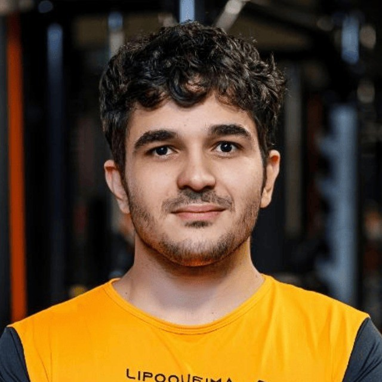

Summary
Lucas César de Paula Ottoni

Date of Birth: October 4, 1996
Address: 66 Antonio Portilho Street, Recanto, PM - MG, Brazil
Phone: +55 31 97197-3786
Email: lucasottoni215@gmail.com
Education & Training
Bachelor of Business Administration
Federal University of Viçosa - Florestal Campus (UFV-Florestal), 2018 – 2023
Key activities: President of the Student Central Directory (DCE), Junior Enterprise member, scholarship holder in the Extension and Culture Directorate. Final Year Project on Entrepreneurial Ecosystems on the Ethereum Network.
Additional Training
Completed courses in Video Editing and Motion Design, Web and Blockchain Development on Udemy, focusing on skills for the Web 3.0 era.
Skills and Languages
Skills: Blockchain and Ethereum, Digital Entrepreneurship, Project Management, Digital Marketing.
Languages: Portuguese (Native), English (Fluent), French (Intermediate B1).
Work Experience
Founder & Project Lead - Magibank
Self-Initiated Project
January 2024 - Present
- Pioneered Magibank, focusing on satoshis tokenization via Ethereum, showcasing blockchain expertise.
- Active in Ordinals and NFT communities, enhancing project visibility through influencer collaborations.
Sales Representative - Lipoqueima
Para de Minas, MG, Brazil
January 2023 - Present
- Consistently exceeded sales targets, leveraging digital tools for enhanced customer engagement.
Digital Marketing and Live Broadcast Manager - Câmara Municipal de Florestal
Florestal, MG, Brazil
2022
- Managed live broadcasts and digital marketing, employing video and image editing tools for content creation.
Sales Representative - Number One English School
Para de Minas, MG, Brazil
2021
- Recognized for outstanding sales performance, implementing strategies that significantly surpassed goals.
Web 3 Marketing Consultant - Trevo
Agência de Marketing Focado em Web 3
July 2023 - December 2023
- Provided expert consultancy on Web 3 marketing strategies, enhancing brand presence and engagement in the blockchain space.
- Collaborated on innovative marketing campaigns for blockchain projects, contributing to increased visibility and community growth.
Skills and Technologies
- Blockchain & Ethereum: Solidity smart contracts, active Web 3.0 community engagement.
- Web Development: HTML, CSS, JavaScript for Web 3.0 content.
- Community Management: Discord community growth, active participation in Web 3.0 discussions.
- Digital Marketing & Content Creation: Proficient in Premiere, After Effects, Canva.
- Sales & Negotiation: Proven track record in exceeding sales targets.
Education & Continuous Learning
Committed to continuous learning in blockchain development and cryptocurrency concepts.